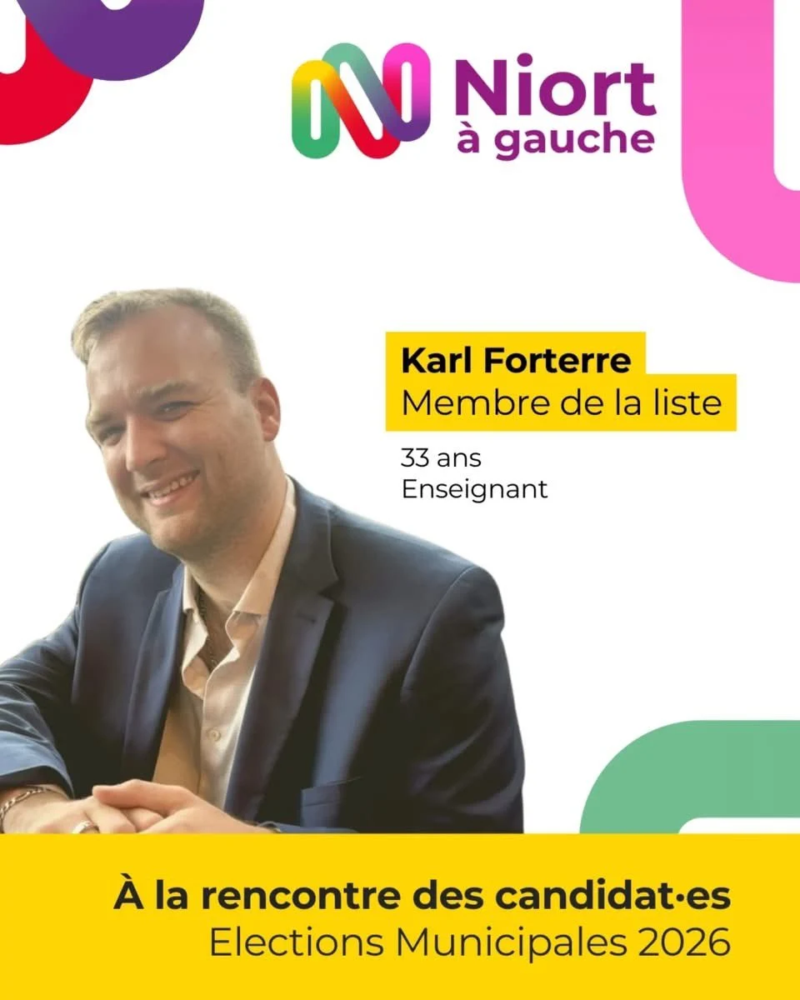

Publication sur X
Municipales à Niort. Karl Forterre présenté par le PCF 79
Date de publication sur X · 10 décembre 2025
Repères éditoriaux
Nous avons présenté Karl Forterre parmi les premiers noms de la liste Niort à Gauche. Le portrait de campagne accompagne cette annonce.
Texte de la publication sur X
Karl Forterre est notre second candidat parmi les douze premiers noms de la liste pour les municipales de Niort.
Niort à Gauche est la liste qui permettra un retour des sujets d’enjeux tels que la santé, le social, la mobilité et la culture. https://t.co/Sai7p67Fec

Sources
PCF 79 · @79Parti sur X · AR-0005-TW-1998777328927744379
À lire aussi · Sénatoriales 2026. Le PCF 79 présente Frédéric Giraud et Valérie Mazé
Publications associées
- Municipales à Niort. La candidature de Karl Forterre · Portrait Facebook de Karl Forterre
- Municipales 2026. Notre appel à voter Niort à Gauche · Campagne de Niort à Gauche
- Municipales à Niort. Maëlle Lebeltel présentée par le PCF 79 · Publication de la même séquence